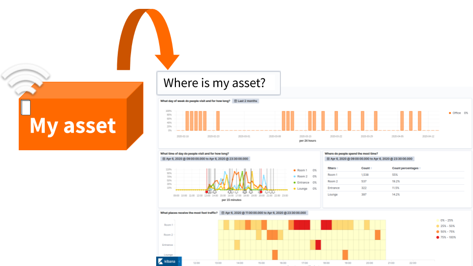
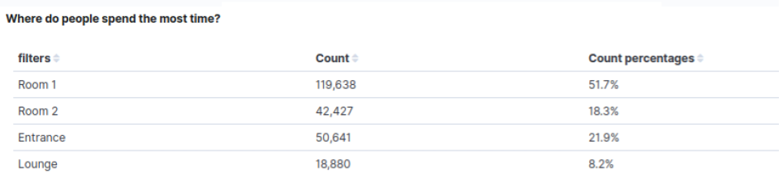

Create an asset tracking dashboard in Kibana
Our step-by-step guide to create an asset tracking dashboard for physical spaces using Kibana.
The TL;DR (Too Long; Didn't Read)
Learn how to filter visualisations to effectively tell the story of an asset within physical spaces.
- What's the source data?
- Ambient wireless packet traffic (typically Bluetooth Low Energy) from the physical spaces is all that is required.
- What is Kibana?
- Kibana is the visualisation interface to the Elastic Stack, with which our Pareto Anywhere open source software is tightly integrated.
- Can I use something else?
- Yes. Our software integrates well with other databases and analytics tools.
Prerequisites
A source of data and an instance of the Elastic Stack.
-

Set up a hosted Elasticsearch Service
Our step-by-step guide to setup Elastic's hosted cloud service for use with our open source software.
reelyActive infrastructure or standard devices such as a Raspberry Pi can provide a source of data. Our Pareto Anywhere open source software can collect and forward the data to Elasticsearch.
Get Owl-Equipped to have these prerequisites and this dashboard prepared for you.
Creating a new dashboard Step 1 of 3
Create a dashboard in Kibana in a few simple clicks.
- What's a dashboard?
- A Kibana dashboard combines individual visualisations to communicate information to users who don't need to understand the underlying technologies.
- Can there be multiple?
- Yes. It is possible, and often useful, to create multiple dashboards, for instance so that each has a specific purpose and fits within a typical screen.
Open Kibana and then:
- Enter the credentials (username and password)
- Click the dashboard icon from the left toolbar
- Click the create a new dashboard button
The next step is to include visualisations that highlight the utilization of the space as described in this tutorial:
Create an occupancy dashboard in Kibana
Our step-by-step guide to create an occupancy dashboard for physical spaces using Kibana.You should be able to get a dashboard filled by meaningful visualisations as below:

Filtering Step 2 of 3
Learn how to search for a specific asset and get a customer/asset/people centric journey through the dashboard built.
- What's a journey?
- An overview of the route an asset has traveled.
- How to identify an asset?
- By labeling a range of physical assets. These asset tags include serial numbers that serve as unique identification numbers
From the dashboard tab:
- Click the + Add filter button below the top toolbar
- Select transmitterId from the Field input
- Choose the operator Is
- Enter the value of the unique ID associated with the tag placed on the asset
- Name and Save filter
Once the filter is saved, all dashboard visualisations will be adjusted so that only the data linked to the transmitter Id will appear.

Analysing Step 3 of 3
Observe the filtered dashboard and easily answer the following questions:
What day does the asset visit?
What time of day does the asset visit and for how long?
Where does the asset spend the most time?
Which places receive the most foot traffic?
What day does the asset visit?
This visualisation over two months only reveals the days when the asset was detected. Each bar up to 100% of occupancy represents one of these days.

What time of day does the asset visit and for how long?
By adjusting a visual builder visualisation over a day it is possible to observe the occupancy patterns by hour and to determine how long the asset spent in each area.


Where does the asset spend the most time?
This table mesures the number of transmission of the asset detected in each zone.
Which places receive the most foot traffic?
This heatmap traces the route of the asset over a day. The colors on the heatmap correspond to foot traffic during a particular time period. Red areas are ones asset walked in and spent time, while white/yellow spots had lower traffic.


Winner of a 2020 Elastic Search Award!
For our innovation of making physical spaces searchable like the web.
Where to next?
Learn more about Kibana integration, or continue exploring our open architecture and all its applications.
-

reelyActive Kibana integration overview
Find links to all our Kibana tutorials. -

Asset Tracking Use Case
Learn more about this use case of Pareto Anywhere by reelyActive. -

diyActive Home
The home for reelyActive developers.